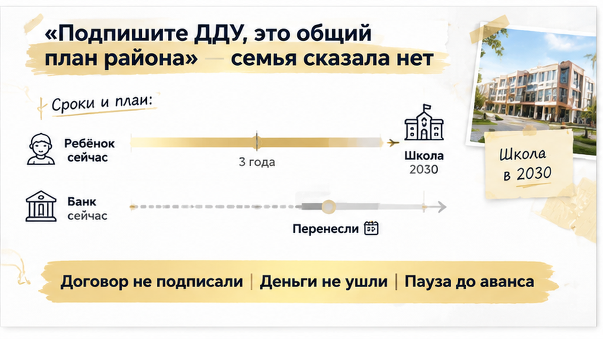
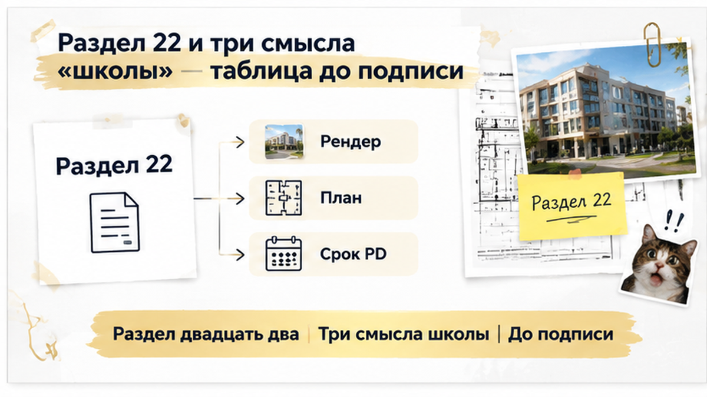

За четырнадцать дней до ДДУ тюменская семья открыла проектную декларацию и увидела: школа, которую им продавали словом «рядом», в документе заявлена только к 2030 году. А их ребёнку в первый класс через три года — такой разрыв заставил их остановиться до визита в банк. Бронь оформлена, подписание стоит в графике, наутро им предстояло обсуждать ипотеку. Спорить с красивой картинкой они не стали, а просто положили её рядом с документом по своему дому. Этого хватило, чтобы остановиться до того, как ушли деньги.
Я Святослав Шакин, The Риэлтор, Тюмень. Разбираю новостройки до подписи, пока ещё можно спокойно сказать «нет». Если вы стоите перед ДДУ и сомневаетесь в обещаниях про школу, садик или дороги, напишите мне в Telegram или в MAX. Откроем декларацию вместе.
Расскажу изнутри, как это обычно выглядит.
Для семьи со школьником главный вопрос не метраж и не вид из окна. Главный вопрос простой: куда ребёнок пойдёт учиться.
Отдел продаж отвечает на него очень убедительно. На рендере рядом с домами стоит светлое здание с флагштоком. В буклете строчка «школа в шаговой доступности». Менеджер добавляет от себя: «Детям ходить недалеко, двор закрытый, всё продумано».
Обычный покупатель слышит: «школа есть». Профи слышит другое: «школа где-то упомянута».
Ведь ни одна из этих фраз не врёт. Но ни одна и не говорит, о какой школе речь. Она может уже работать. Может строиться. А может пока жить только на генплане. Это три совсем разных календаря, и реклама склеивает их в одно слово «рядом».
Подсказка, где искать правду, на самом деле есть в той же рекламе. По закону о рекламе (ч. 7 ст. 28) объявление о привлечении денег в ДДУ обязано содержать адрес сайта с проектной декларацией и фирменное название застройщика. Мелкая строчка внизу ведёт к первоисточнику. Только читать его за вас никто не будет.
Похожий разрыв между словами и бумагой я уже разбирал в истории, где в брони обещали собственность на землю, а в проектной декларации была аренда.
Вечер перед банком. Кухня, ноутбук между тарелками, ребёнок уже спит. Бронь на руках, утром ехать.
И тут покупатели делают то, что большинство откладывает «на потом» или вообще доверяет менеджеру. Заходят на наш.дом.рф и открывают проектную декларацию. Не презентацию комплекса, не красивый PDF из мессенджера, а актуальный документ именно по своему дому.
«Давай просто глянем, что там про школу», — так они мне потом пересказали этот вечер.
Никто не собирался «ловить» застройщика. Им хотелось одного: убедиться, что школа существует не только на картинке. Разница между буклетом и декларацией тут принципиальная. Буклет — это реклама. Декларация — официальный документ, за строчки в котором застройщик отвечает.
Листали спокойно, без нервов. Дошли до раздела про объекты социальной инфраструктуры.
И там стояла дата, которая не совпала с их семейным планом.
Сначала они просто вбили слово «школа» в поиск по документу. Нашли быстро.
Потом прочитали строку целиком. Объект социальной инфраструктуры, связанный со школой в рамках проекта. Плановый срок: к 2030 году.
А рядом с ноутбуком лежал буклет. На рендере дети с рюкзаками идут через двор. В буклете написано «рядом». В документе стоит конец десятилетия.
Обычный покупатель в этот момент сверяет школу с датой сдачи дома. «Дом сдадут, потом и школу достроят, нормально». Профи кладёт рядом другой календарь: возраст ребёнка.
Ребёнку в первый класс через три года. Дом сдадут раньше школы. Значит, первые годы после заселения он будет ходить в другую школу. Другим маршрутом. Возможно, через дорогу без светофора. Возможно, на автобусе.
Расскажу изнутри, чтобы было честно. Срок инфраструктуры вправе стоять позже ввода дома. Подлога в этом нет, застройщик ничего не прятал, дата открыто стоит в документе. И даже когда школу реально строят, от первых свай до первого звонка проходят годы.
Проблема не в 2030-м. Проблема в том, что слово «рядом» склеивает три разных календаря в один, а ребёнок живёт только в одном из них. Похожий разрыв я разбирал на загородном примере: в брони обещали газ в 2026, а в декларации стояла дата 2028.
Семья увидела это до подписи. Не после ключей, не на первой линейке в чужой школе. За две недели до ДДУ, когда решение ещё целиком у них.
Наутро они пришли в офис продаж с распечаткой. Разговор восстанавливаю по их словам.
Менеджер посмотрел на строку с 2030 годом и улыбнулся:
«Это формальность. Есть общий план района, визуализация. Школа будет, это вопрос времени. Давайте не терять бронь».
Обратите внимание: спорить о том, будет ли школа, семья не стала. Они задали другой вопрос. И это вопрос, который я бы сам задал на их месте:
«Где в документах по этому дому школа есть как обязательство? Со сроком, который совпадает с нашим первым классом?»
Ответа на бумаге не нашлось. Был рендер. Была уверенность продавца. Документа не было.
Вот что важно понимать простыми словами. ДДУ в первую очередь про то, какую квартиру и когда вам передадут. Если школа не оформлена как отдельное обязательство, которое можно проверить по документам, то реклама и «скоро» ни к чему не обязывают. Вы купите квартиру. Но не школу к нужному году. Хотя локацию выбирали именно ради неё.
Менеджер ещё раз напомнил про бронь. Семья ответила спокойно:
«Нет. Сейчас не подписываем».
Без скандала. Без слова «обман». Им хватило одной строки в документе, чтобы остановиться до денег.

Итог простой. Договор не подписали. Визит в банк перенесли. По сделке никуда не ушло ни рубля.
Квартира им нравилась, двор с рендера тоже. Но покупали они не метры. Они покупали план на три года вперёд, где у ребёнка первый класс. Школа к 2030-му в этот план не встала.
Объясню, почему момент решает всё. Пока ДДУ нет и деньги у вас, решение тоже за вами. Можно взять паузу, сравнить дома, выбрать вариант с работающей школой. После подписи разговор уже другой: на языке договора и претензий.
Похожую развилку я видел, когда запрет перепродажи в переуступке всплыл за три дня до ДДУ. Бывает и обратная: обещание проверили только на приёмке. Так было в истории, где обещали чистовую, а на приёмке оказались голые стены.
Если школа в проектной декларации заявлена только к 2030 году, вы бы купили квартиру для ребёнка, поверив рекламе «школа рядом»?

Теперь практика. Один раз и коротко.
В проектной декларации по форме Минстроя № 239/пр есть раздел 22. Там объекты социальной инфраструктуры, которые строят на деньги дольщиков. Если школу строит город, регион или отдельный проект, в разделе 22 её может не быть. Пустой раздел не значит, что школы не будет. Он значит, что проверку нужно продолжить.
Почему верить надо декларации, а не буклету? Это официальный документ: за строчки в нём застройщик отвечает по закону, у рендера и устного «у нас всё будет» такого веса нет. И ещё деталь: до ввода дома декларацию обновляют ежемесячно, обычно не позднее 10-го числа следующего месяца. Смотрите версию на сайте в день решения. PDF полугодовой давности из мессенджера может быть уже неактуален, а сроки сдвигаются в обе стороны.
| Что значит «школа рядом» | Что смотреть в документах | Вопрос для семьи |
|---|---|---|
| Готовая, работающая школа | Адрес действующей школы, закрепление территории, реальный маршрут от дома | Возьмут ли по прописке, сколько идти пешком и через какие дороги |
| Стройка в этом проекте | Раздел 22 актуальной декларации: параметры объекта и плановый срок | Совпадает ли срок с годом, когда ребёнку в первый класс, а не только с датой ключей |
| Перспектива района | Отдельный проект или городские планы: есть ли документ, источник финансирования и дата | Готовы ли вы годами возить ребёнка в другую школу, если сроки сдвинутся |
Мой порядок до подписи такой. Открываю на наш.дом.рф декларацию именно по вашему дому, а не по ЖК в целом. Смотрю дату обновления. Ищу раздел 22. Если школы там нет, выясняю, чья это стройка и есть ли по ней документ со сроком. А потом кладу эту дату рядом с возрастом ребёнка.
Хотите посмотреть декларацию по своему дому вместе до ДДУ? Пишите в Telegram или MAX, разберём спокойно.
Рендер со школой ещё не обман. И новостройка сама по себе не приговор. Семьи с детьми в Тюмени покупают квартиры в новых домах и живут в них счастливо.
Разница одна: открыли ли документ до подписи. Эта семья открыла вечером на кухне и утром остановилась до денег. Для них это было не поражение, а их собственное решение.